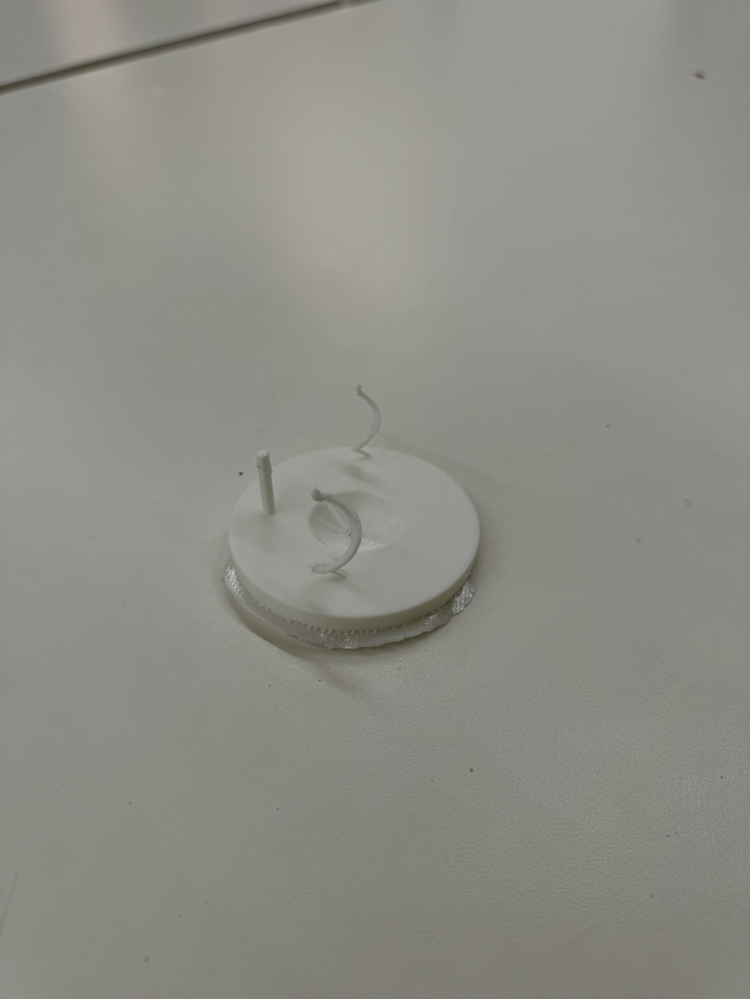
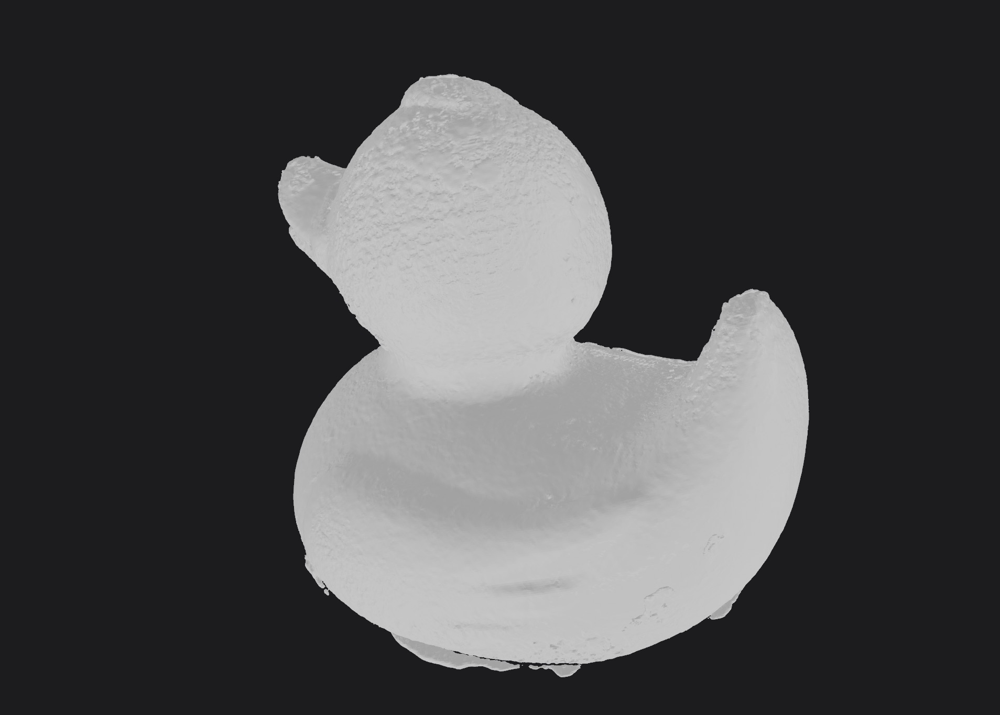

3D Designing
This week, I was thinking of a couple ideas, but I ultimately landed on making a jewelry holder for all of my loose jewelry. The main concern was rings, so I spent a little time thinking about how I wanted to store them. I didn't have a lot of space on my dresser, so I needed something that was relatively small. In addition, I had a bunch of chunky rings as well as small ones, so I needed to make sure they could all be stored despite changes in shape and size.
My solution was to make a print that used more vertical space, allowing the rings to stack. To that end, I made two thin vertical spirals to hold the rings. I also made a spherical hole in the middle of my holder to hold my bracelets, since I had some that needed to be stored. Finally since I already accomodated my bracelets and rings, I decided to make a tree-like structure using splines to hold my earings.
On my first attempt at printing, I printed at a smaller scale. In it, my tree ended up falling apart. To fix it, I ended up making the branches thicker. Below is the final result.


Scanning
For my scannable object, I used the CS50 duck. I had a little bit of trouble merging all of my scans, which required me to delete and redo some of them, but I managed to get a decent final result.

Final Project details under the final project page!